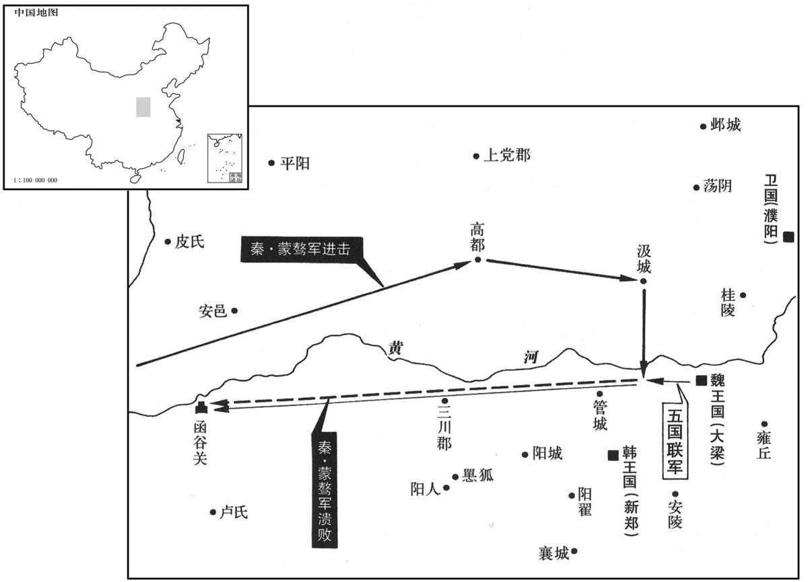

公元前247年资治通鉴：本年记事、原文与白话对照
按原书编年位置阅读；追叙和史论不等于本年发生的事件。白话采用所据译本，缺译不以生成译文补齐。
卷6 · 本年记事
公元前247年 · 庄襄王在位第3年
三年〔（甲寅、前二四七）〕
王龁攻上党诸城，悉拔之，初置太原郡。〔龁，恨勿翻。〕
秦国大将王率军进攻魏国上党郡各城，全部攻取，始设置太原郡。
蒙骜帅师代魏，取高都、汲。〔班志，高都县属上党郡，汲县属河内郡。括地志：高都县，今泽州也。汲故城在卫州所理汲县之西南二十五里。帅，读曰率。〕魏师数败，〔数，所角翻。〕魏王患之，乃使人请信陵君于赵。信陵君畏得罪，不肯还。〔信陵君留赵事见上卷周赧王五十八年。还，从宣翻，又音如字。赧，奴版翻。〕诫门下曰：〔诫，居拜翻，敕也。〕“有敢为魏使通者死！”〔为，于伪翻。使，疏吏翻。〕宾客莫敢谏。毛公、薛公见信陵君曰：“公子所以重于诸侯者，徒以有魏也。〔康曰：重，直用切。余按文义，当音轻重之重。〕今魏急而公子不恤，一旦秦人克大梁，夷先王之宗庙，公子当何面目立天下乎！”语未卒，信陵君色变，趣驾还魏。〔卒，子侐翻。趣，读曰促，催也。〕魏王持信陵君而泣，以为上将军。信陵君使人求援于诸侯。诸侯闻信陵君复为魏将，〔将，即亮翻。〕皆遗兵救魏。信陵君率五国之师败蒙骜于河外，〔自春秋至战国，率以黄河之西为河外，晋赂秦以河外列城五，即其证也。骜，五到翻。败，补迈翻。〕蒙骜遁走。信陵君追至函谷关，抑之而还。
秦将蒙骜率军进攻魏国，占领了高都和汲。魏军屡战屡败，魏安王为此而忧虑，便派人到赵国请信陵君魏无忌回国。信陵君惧怕归国后被判罪，不肯返回，并告诫他的门客们说：“有胆敢给魏国使者通报消息的，处死！”于是，宾客们都不敢规劝他。毛公、薛公为此拜见信陵君说：“您所以受到各国的敬重，只是因为强大的魏国还存在。现在魏国的情势危急，而您却毫不顾惜，如此，一旦秦国人攻陷了国都大梁，将先王的宗庙铲为平地，您当以何面目立在天下人的面前啊！”二人的话还未说完，信陵君已脸色大变，即刻驾车赶回魏国。魏王见到信陵君后握着他的手啜泣不止，随即便任命他为上将军。信陵君派人向各诸侯国求援，各国听说信陵君重又担任魏国的大将，都纷纷派兵援救魏国。信陵君率领五国联军在黄河以西击败蒙骜的军队，蒙骜带残部逃崐走。信陵君督师追击到函谷关，将秦军压制在关内后才领兵还魏。

安陵人缩高之子仕于秦，〔后汉志：汝南郡征羌县有安陵亭。注云：即魏安陵君所封地。括地志曰：鄢陵县西北十五里。李奇云：六国时为安陵。还，从宣翻，又音如字。缩，所六翻。〕秦使之守管。〔班志，河南郡中牟县有管叔邑。后汉志，中牟县有管城。杜预曰：管，国也，在京县东北。〕信陵君攻之不下，使人谓安陵君曰：“君其遣缩高，吾将仕之以五大夫，使为执节尉。”〔信陵君使安陵君遣缩高，欲使安陵以君谕其民，以父谕其子也。军尉之执节者也。周执节以使，汉执节则使且可以专杀矣，〕安信陵君曰：“安陵小国也，不能必使其民。使者自往请之。”使吏导使者至缩高之所。使吏致信陵君之命，缩高曰：“君之幸高也，将使高攻管也，夫父攻子守，人之笑也；见臣而下，是倍主也。父教子倍，亦非君之所喜。〔夫，音扶。倍，蒲妹翻。喜，许既翻。〕敢再拜辞！”使者以报信陵君。信陵君大怒，遣使之安陵君所曰：“安陵之地，亦犹魏也。〔使，疏吏翻。之，如也，往也。安陵本魏地，魏襄王以封其弟。〕今吾攻管而不下，则秦兵及我，社稷必危矣。愿君生束缩高而致之。若君弗致，无忌将发十万之师以造安陵之城下。”〔造，七到翻。〕安陵君曰：“吾先君成侯受诏襄王以守此城也。手授太府之宪。〔太府，魏国藏图籍之府。宪，法也。〕宪之上篇曰：『臣弑君，子弑父，有常不赦。〔有常，谓有常法也。〕国虽大赦，降城亡子不得与焉。』〔降，户江翻。与，读曰预。〕今缩高辞大位以全父子之义，而君曰『必生致之』，是使我负襄王之诏而废太府之宪也，虽死，终不敢行！”缩高闻之曰：“信陵君为人，悍猛而自用，此辞必反〔【章：十二行本二字互乙；乙十一行本同；孔本同。】〕为国祸。〔谓为安陵之祸也。悍，下罕翻，又音汗。〕吾已全己，无违人臣之义矣，岂可使吾君有魏患乎！”乃之使者之舍，刎颈而死。信陵君闻之，缟素辟舍，〔刎，扶粉翻。颈，居郢翻。缟，古老翻。尔雅曰：缟，皓也。辟，读曰避。〕使使者谢安陵君曰：“无忌，小人也，困于思虑，失言于君，请再拜辞罪！”〔安陵，受封于魏国者也，缩高，受廛于安陵者也。缩高之子不为魏民，逃归秦而臣于秦，为秦守管。时秦加兵于魏，欲取大梁，安陵傥念魏为宗国，缩高傥念其先为魏民，见魏之危，安敢坐视而不救。公子无忌为魏举师以临之，安陵君则陈太府之宪，缩高则陈大臣之义以拒之，虽死不避，反而求之，可谓得其死乎！无忌为之缟素辟舍以谢安陵，吾亦未知其何所处也。〕
魏国安陵人缩高的儿子在秦国供职，秦人让他负责守卫管城。信陵君率军攻管城不下，便派人去见安陵君说：“如果您能遣送缩高到我这里来，我将授给他五大夫的军职，并让他担任执节尉。”安陵君说：“安陵是个小国，百姓不一定都服从我的命令。还是请使者您自己前去邀请他吧。”于是就委派一个小官引导魏国的使者前往缩高的住地。使者向缩高传达了信陵君的命令，缩高听后说：“信陵君之所以看重我，是为了让我出面去进攻管城。而为父亲的攻城，作儿子的却守城，这是要被天下人耻笑的。况且我的儿子如果见到我就放弃了他的职守，那便是背叛他的国君；作父亲的若是教儿子背叛，也不是信陵君所喜欢的行为。我冒昧地再拜，不能接受信陵君的旨令。”使者回报给信陵君，信陵君勃然大怒，又派使者到安陵君那里说：“安陵国也是魏国的领地。现在我攻取不下管城，秦国的军队就会赶到这里来攻打我，这样一来，魏国肯定就危险了。希望您能将缩高活着捆送到我这里！如果您不肯这么做，我就将调动十万大军开赴安陵城下。”安陵君说：“我的先代国君成侯奉魏襄王的诏令镇守此城，并亲手把太府中所藏的国法授给了我。国法的上篇说：‘臣子杀君王，子女杀父亲，常法规定绝不赦免这类罪行。即使国家实行大赦，举城投降和临阵脱逃的人也都不能被赦免。’现在缩高推辞不受您要授与他的高位，以此成全他们的父子之义，而您却说‘一定要将缩高活着捆送到我这里来’，如此便是要让我违背襄王的诏令并废弃太府所藏的国法啊，我纵然去死，也终归不敢执行您的指示！”缩高闻听这件事后说：“信陵君这个人，性情凶暴蛮模，且刚愎自用，那些话必将给安陵国招致祸患。我已保全了自己的名声，没有违背作为臣子应尽的道义，既然如此，我又岂可让安陵君遭到来自魏国内部的危害呀！”于是便到使者居住的客舍，拔剑刎颈，自杀而死。信陵君获悉这一消息后，身着素服避住到厢房，并派使者去对安陵君道歉说：“我真是个小人啊，为要攻取管城的思虑所困扰，对您说了一些不该说的话，请让我再拜，为我的罪过向您道歉吧！”
王使人行万金于魏以间信陵君，求得晋鄙客，〔信陵君杀晋鄙事见上卷周赧王五十六年。间，古苋翻。〕令说魏王曰：“公子亡在外十年矣，今复为将，诸侯皆属，天下徒闻信陵君而不闻魏王矣。”〔令，力丁翻。说，式芮翻。将，即亮翻。〕王又数使人贺信陵君：“得为魏王未也。”〔数，所角翻。〕魏王日闻其毁，不能不信，乃使人代信陵君将兵。信陵君自知再以毁废，乃谢病不朝，日夜以酒色自娱，凡四岁而卒。〔朝，直遥翻。卒，子恤翻。〕韩王往吊，其子荣之，以告子顺。子顺曰：“必辞之以礼！『邻国君吊，君为之主。』〔郑玄曰：君为之主，吊臣恩为已也。子不敢当主，中庭北面，哭不拜。记曰：昔者卫灵公适鲁，遭季桓子之丧，卫君请吊，哀公辞，不得命，公为主。客入吊，公揖让，升自东阶，西乡；客升自西阶吊。公拜，兴，哭。〕今君不命子，则子无所受韩君也。”其子辞之。
庄襄王为了挑拨离间信陵君与魏王的关系，遣人携带万金前往魏国，寻找到被信陵君所杀的晋鄙的门客，让他去劝说魏王道：“信陵君流亡国外十年，现在重新担任了魏国的大将，各诸侯国的将领都隶属于他，致使天下的人只听说有信陵君这个人，而不知道还有魏王您了。”庄襄王又多次派人奉送礼物给信陵君表示庆贺说：“您做了魏国国君没有啊？”魏王天天都听到这类诽谤信陵君的话，不能不信，于是就令人代替信陵君统领军队。信陵君明白自己第二次因别人的诋毁而被废黜了，便以生病为由不再朝见魏王参与议事，日夜饮酒作乐，沉湎于女色中，过了四年就死去了。韩国国君桓惠王亲至魏国吊丧。信陵君的儿子颇以此为荣，便将这件事告诉了孔斌。孔斌却说：“你一定要按照崐礼制推辞掉韩王的悼念活动！礼制规定：‘邻国国君前往某国吊丧，这吊丧活动应由某国的国君来主持。’现在魏王并没有委命你代他主持吊丧仪式，因此你也就没有资格去接待韩王来进行吊丧了。”信陵君的儿子便未接受韩王的吊丧。
五月，丙午，王薨。〔薨，呼肱翻。〕太子政立，生十三年矣，国事皆决〔【章：十二行本“决”作“委”；乙十一行本同，孔本同；张校同；退斋校同。】〕于文信侯，号称仲父。〔吕不韦封文信侯。仲父，以齐桓礼管仲礼之。〕
五月，丙午（二十六日），庄襄王去世，太子嬴政继位。嬴政这时只有十三岁，故一切国家大事都由文信侯吕不韦决定，号称他为“仲父”。
晋阳反。〔是年，秦攻得晋阳，置太原郡；未久而秦有庄襄王之丧，故反。〕
秦国属地晋阳反叛。
原书衔接
始皇帝上〔讳政，庄襄王子也。王并天下，自以德兼三皇，功过五帝，故自号曰皇帝；欲传世以一至万，乃除谥法，号始皇帝。〕